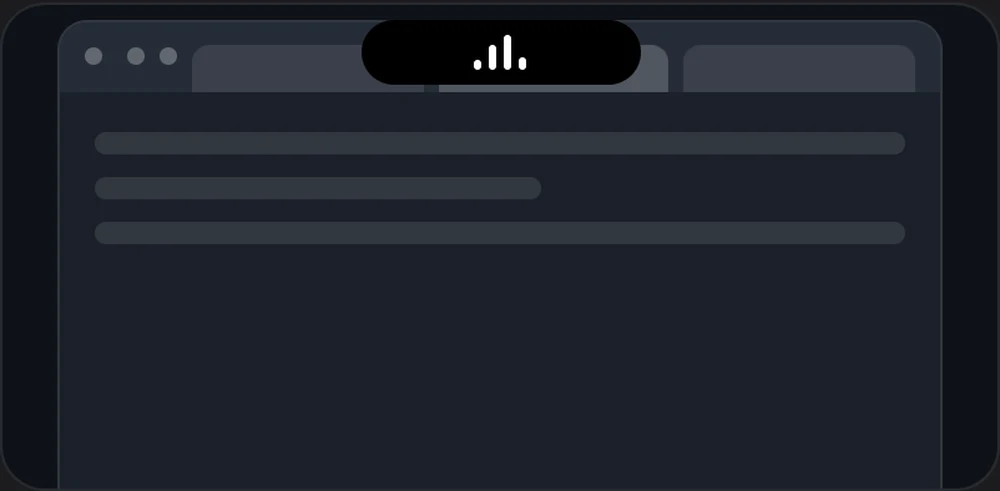

Music stays visible in browsers
When YouTube, YouTube Music or TikTok plays a song in your browser, Grump can keep showing it. It is off by default, because the notch then covers the tab in the middle of the browser. Turn it on in Preferences > Features > Music.